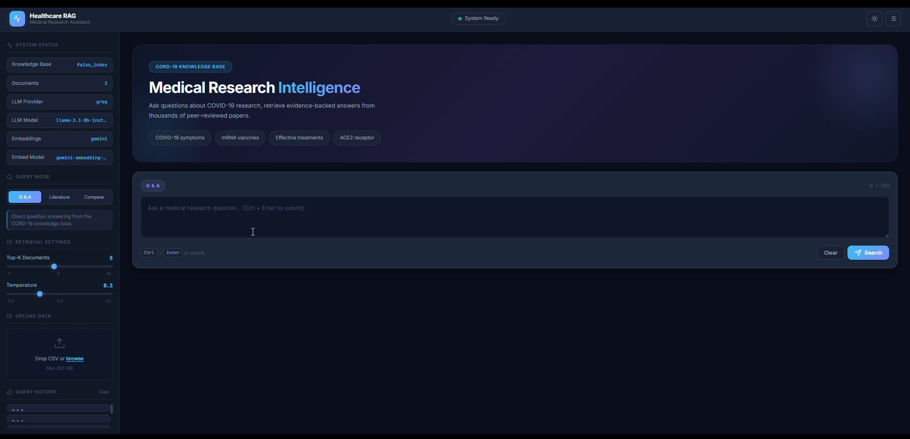
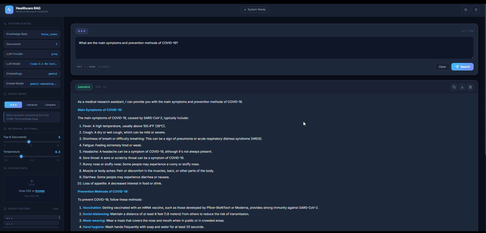
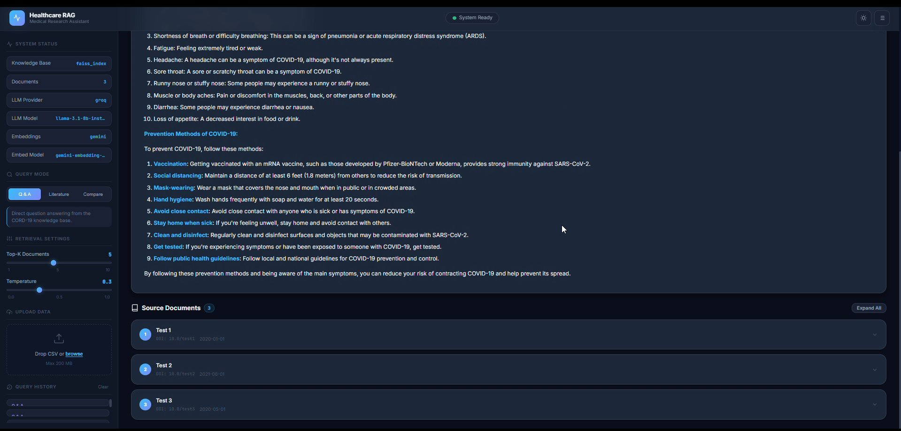
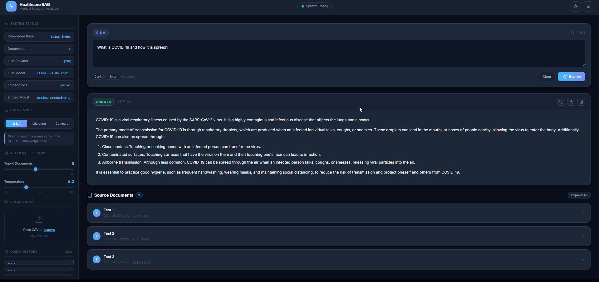

The Healthcare RAG System is a powerful Retrieval-Augmented Generation web application specifically designed for healthcare and medical research documents. It ingests, processes, and queries large datasets — such as the CORD-19 (COVID-19 Open Research Dataset) — using state-of-the-art Large Language Models delivered through a Flask-based Single Page Application.
Users can seamlessly ask questions, generate structured literature reviews, or compare findings across multiple peer-reviewed research papers — all backed by evidence retrieved from a FAISS vector index with numbered source document citations.
Application Screenshots




Core Features
RAG Pipeline Architecture
Real-time display of Knowledge Base (faiss_index), document count, LLM provider (Groq), active model (llama-3.1-8b-instant), embedding API (Google Gemini), and embed model (gemini-embedding-001).
Three distinct modes: Q&A for direct factual answers, Literature Review for synthesised topic overviews aggregating multiple sources, and Compare for contrasting research methodologies across papers.
Backend Architecture
- Python 3.8+ with Flask & Flask-CORS
- LangChain RAG framework
- FAISS (faiss-cpu) vector database
- Groq API — LLaMA-3.1-8b-instant
- Google Gemini API embeddings
- Lazy-loaded RAG components
Frontend & Features
- HTML5, Vanilla CSS, Vanilla JavaScript
- Configurable Top-K & Temperature
- CSV drag-and-drop upload (max 200 MB)
- Expandable source documents panel
- Session-level query history sidebar
- Rate-limit retry mechanisms